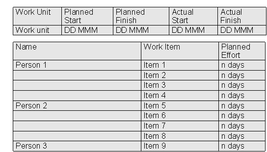

| Artifact: Operational Schedule (ENG 336) |
 |
|
The purpose of the Operational Schedule is:
An Operational Schedule
|
| Main Description | The Operational Schedule shows how the work of a project organizational unit is broken down into work items, each of which is assigned to an individual named resource or a small team of named resources, as part of their work packages. An Operational Schedule, and its variation called checkpoint schedule, is usually handled with a spreadsheet. The Operational Schedule is created during Starting and then expanded several times during the remainder of the project. The planning horizon, or the duration for which the schedule is expanded, is typically the shorter of the end of the current project phase or one to three months. The group of persons performing the work within a project organizational unit may be organized into several teams lead by different team leaders. In that case, each team leader has their own section of the Operational Schedule. Revision History
|
||||||||||||||||||||||||||||||||||||||||||||||||||||||||||||||||||||||||||||||||||||||
|---|---|---|---|---|---|---|---|---|---|---|---|---|---|---|---|---|---|---|---|---|---|---|---|---|---|---|---|---|---|---|---|---|---|---|---|---|---|---|---|---|---|---|---|---|---|---|---|---|---|---|---|---|---|---|---|---|---|---|---|---|---|---|---|---|---|---|---|---|---|---|---|---|---|---|---|---|---|---|---|---|---|---|---|---|---|---|---|
| Brief Outline | The structure of the Operational Schedule when created is illustrated in the following diagram. Additional columns, which contain tracking data, are added once the work is underway.  |
||||||||||||||||||||||||||||||||||||||||||||||||||||||||||||||||||||||||||||||||||||||
| Notation |
|
A project organizational unit's Operational Schedule must be coordinated with its corresponding Project Management Schedule. The work units of the Project Management Schedule are decomposed into the work items that need to be achieved in order to carry out and complete the work units. The work items are bundled into work packages that contain a group of work items. The work packages are then assigned to a specific individual or small team for completion in a given time frame. The work items are estimated separately and totaled together to provide an estimate for the entire work package. The work is then scheduled, taking into account individual periods of absence. It usually takes several iterations to build an acceptable Operational Schedule with regard to the right balance of effort among team members. The Operational Schedule should also reflect the work load of any individuals who have been assigned significant actions in response to events (see EM. Event management). Progress (as measured by actual effort and effort to complete) is tracked at regular intervals (typically weekly) and, when required, the work packages are adjusted to allow for any differences between planned and actual progress. The team leader has the responsibility to contain any such variances within their scope of control and not to impact any other schedules. Although they can be produced manually, Operational Schedules are usually built using project management software or spread sheet and presented as text-based tables. The accuracy and completeness of the Operational Schedule is verified by inspection and by ensuring its consistency with the Project Management Schedule and Work Product List. For projects which have small and very small work requests coming frequently can additionally use the workload tracker for annuity projects for a more detailed tracking of resource workload across applications and modules. |
| Impact of not having | Without an Operational Schedule, the project team members do not know precisely what work efforts they must target. Also, the project management team cannot be sure that the work of the project is proceeding as planned. Additionally, by including a large number of detailed tasks in the Project Management Schedule, rather than in an Operational Schedule, the usability of the Project Management Schedule would be jeopardized. |
|---|---|
| Reasons for not needing | A project organizational unit that is solely responsible for managing the work of reporting project organizational units may not need an Operational Schedule. |
| © Copyright IBM Corp. 1987, 2012 All Rights Reserved Property of IBM These materials are intended only for use as part of an IBM engagement |